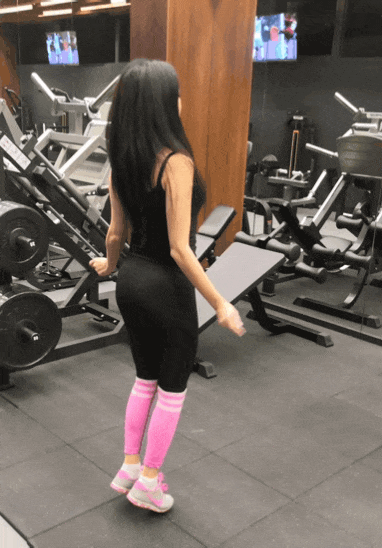
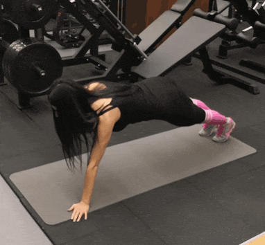

Разминка:
Прыжки на скакалке(можно без нее) главное работать
руками и подниматься на стопах:
Выполение: 1 минута.
Отдых: 20сек
3-5серий( в зависимости от подготовки).

Наклоны
Положение: Ноги чуть шире плеч
Описание: плавно стараемся достать до стоп,
левая нога-середина-правая нога по 5-7 к каждой точке.

Тренировка
Выполняем упражнения подряд, 1,2,3,4 затем повторяем круг 3-4раза, отдых между упражнениями 40сек если становится "не по себе" отдыхаем 1-2мин до оптимального состояния
1. Приседания
Положение ноги на ширине плеч, носки слегка разведены в стороны
Выполение: 20-25-30раз с каждой тренировкой повышая колличество
Отдых: 40сек между сериями

2. Отжимания
Положение упор лежа на коленях, от плеч до колен прямая линия(попу не отставляем)
Сгибаем руки в локтевом суставе, достаем грудью до пола и поднимаемся обратно, не выгибая локти в верхней точке
Выполение: 10-15-20раз с каждой тренировкой повышая колличество
Отдых: 40сек между сериями

3. Ладони к плечам
Положение упор лёжа, достает правой ладонью до левого плеча и левой ладонью до правого плеча, не задираем попу вверх,
тело прямая линия
Выполение: 10-15-20раз на каджую руку, с каждой тренировкой повышая колличество
Отдых: 40сек между сериями

4. Обратные выпады
Положение ноги чуть уже плеч, руки на грудь, делаем шаг назад на носок,
так чтобы колено впереди стоящей ноги не выходило за носок, и взаже стоящая нога была под 90',
подъем осуществляется за счет впереди стоящей ноги, С ПЯТКИ
Выполение: 10-15-20раз, с каждой тренировкой повышая колличество
Отдых: 40сек между сериями

После тренировки выполняем хорошую растяжку чтобы не болели мышцы
Разминка:
Прыжки на скакалке(можно без нее) главное работать
руками и подниматься на стопах:
Выполение: 1 минута.
Отдых: 20сек
3-5серий( в зависимости от подготовки).
Наклоны
Положение: Ноги чуть шире плеч
Описание: плавно стараемся достать до стоп,
левая нога-середина-правая нога по 5-7 к каждой точке.
Тренировка
Выполняем упражнения подряд, 1,2,3,4 затем повторяем круг 3-4раза, отдых между упражнениями 40сек если становится "не по себе" отдыхаем 1-2мин до оптимального состояния
1. Приседания с доставанием руки пола
Положение ноги на ширине плеч, носки слегка разведены в стороны,
выполняем приседания доставая ладонью пола, колени при этом не уходят вперед за носки
Выполение: 20-25-30раз с каждой тренировкой повышая колличество
Отдых: 40сек между сериями
2. Отжимания с перестаноской рук
Положение упор лежа на коленях, левая кисть на уровне головы, правая под грудью от плеч до колен прямая линия(попу не отставляем)
Сгибаем руки в локтевом суставе, достаем грудью до пола и поднимаемся обратно, не выгибая локти в верхней точке
После выполения отжимания перетсавляем руки
Выполение: 10-15-20раз с каждой тренировкой повышая колличество
Отдых: 40сек между сериями

3. Подьем руки в упоре лёжа
Положение упор лёжа, ноги на ширине плеч,поочередно поднимаем прямую руку вверх через
сторону разворачивая корпус на 90', не задираем попу вверх,
тело прямая линия
Выполение: 10-15-20раз на каджую руку, с каждой тренировкой повышая колличество
Отдых: 40сек между сериями

4. Подьем рук у стены
Положение стоя у стены, спина, затылок,ягодицы и плечи прижаты к стене,
плавно поднимаем руки прижатые к стене, сводя ихнад головой
Выполнение 20-25-30раз
Отдых: 40сек между сериями
После тренировки выполняем хорошую растяжку чтобы не болели мышцы
Разминка:
Прыжки на скакалке(можно без нее) главное работать
руками и подниматься на стопах:
Выполение: 1 минута.
Отдых: 20сек
3-5серий( в зависимости от подготовки).
Наклоны
Положение: Ноги чуть шире плеч
Описание: плавно стараемся достать до стоп,
левая нога-середина-правая нога по 5-7 к каждой точке.
Тренировка
Выполняем упражнения подряд, 1,2,3,4 затем повторяем круг 3-4раза, отдых между упражнениями 40сек если становится "не по себе" отдыхаем 1-2мин до оптимального состояния
1. Приседания с покачиванием
Положение ноги на ширине плеч, носки слегка разведены в стороны, выполняем приседания с покачиванием,
колени не выходят за носки, главное чтобы покачивание было ниже горизонтали(приседаем глубоко)
Выполение: 20-25-30раз с каждой тренировкой повышая колличество
Отдых: 40сек между сериями

2. Отжимания с подьемом руки в сторону
Положение упор лежа на коленях, от плеч до колен прямая линия(попу не отставляем)
Сгибаем руки в локтевом суставе, достаем грудью до пола и поднимаемся обратно, после чего поднимаем руку в сторону разворачивая корпус
Выполение: 12-16-20раз с каждой тренировкой повышая колличество
Отдых: 40сек между сериями
3. Альпинист
Положение упор лёжа, колено поднято к груди,"в беге" делаем смену ног
Выполение: 40-60-80раз, с каждой тренировкой повышая колличество
Отдых: 40сек между сериями

4. Пресс лежа на спине
Положение лежа на спине, ноги согнуты в коленях, тянемся руками вверх и делаем подьем за счет сгибания спины, тянемся пречами а не головой вперёд
10-15-20раз с каждой тренировкой повышая колличество
Отдых: 40сек между сериями

После тренировки выполняем хорошую растяжку чтобы не болели мышцы